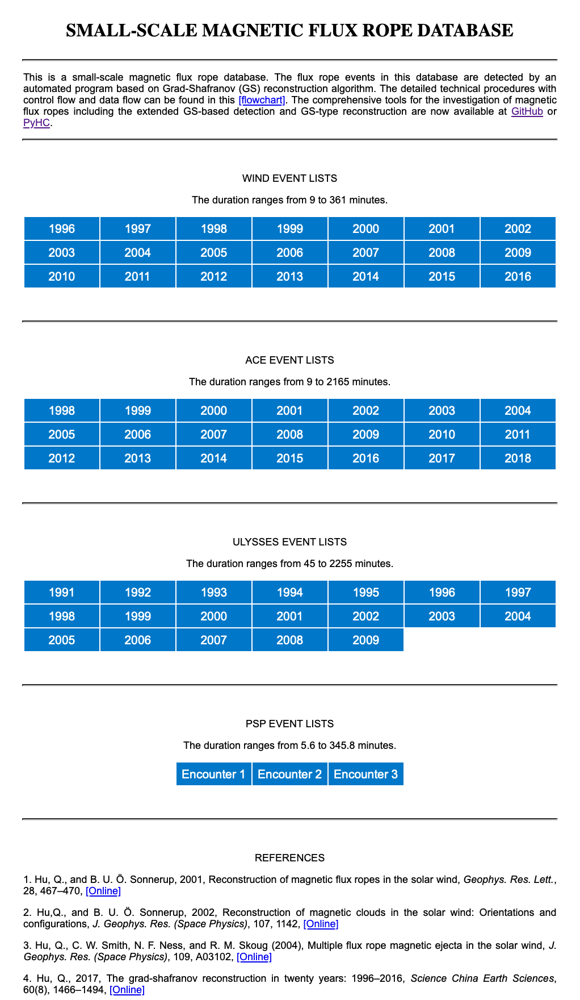
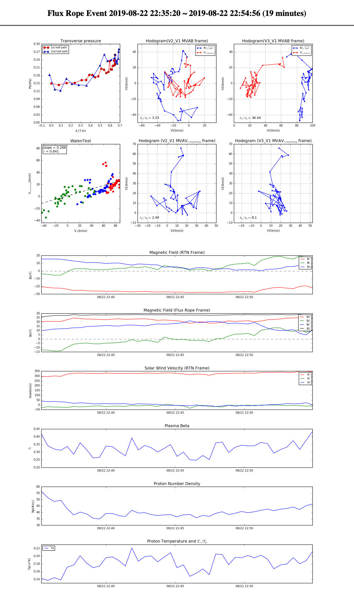
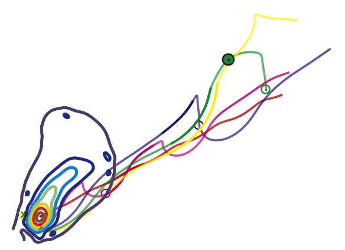
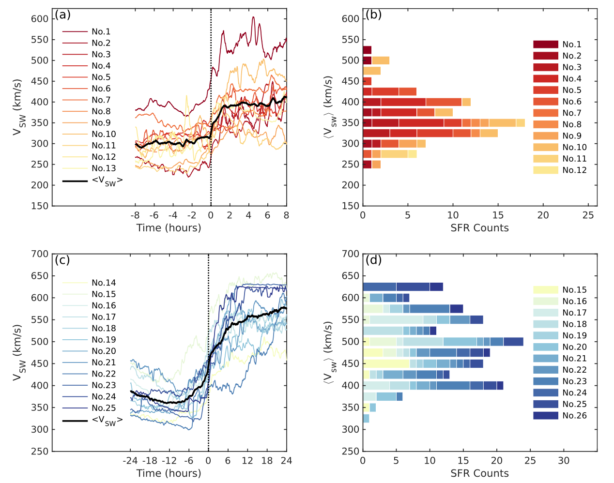
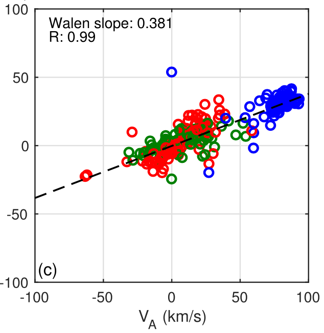
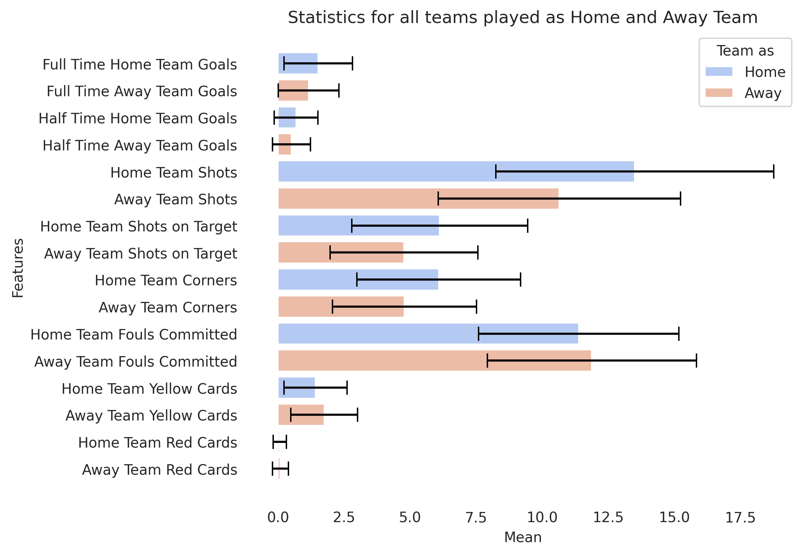
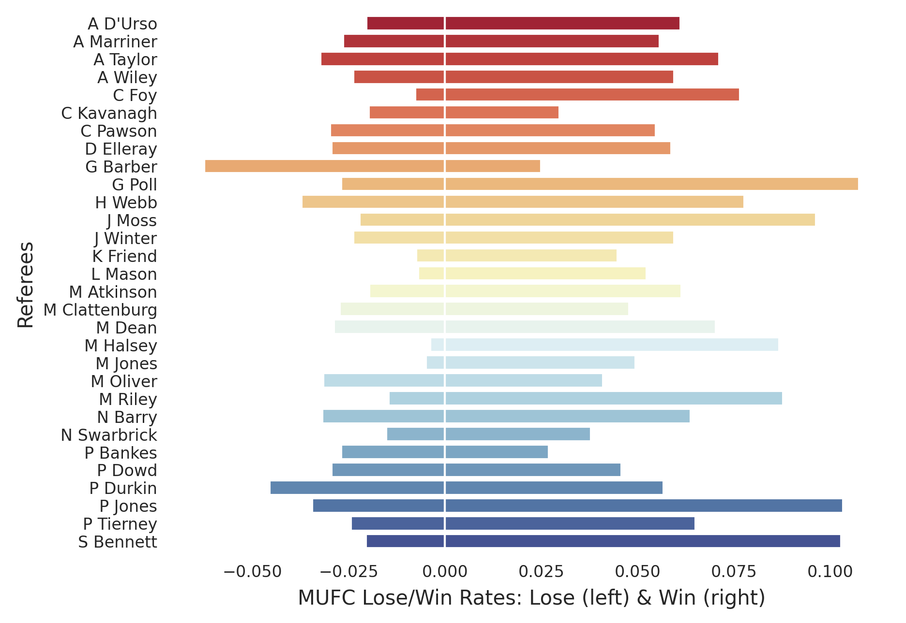

Projects
PyGS: an open source Python package
- This package consists of two vital components, serving as a comprehensive toolkit for the investigation of magnetic flux ropes (FRs) in space plasmas through in-situ spacecraft measurements. Dr. Yu Chen spearheaded its development under the guidance of Dr. Qiang Hu. With PyGS, users can automate the generation of the FR event list from a specified spacecraft dataset, minimizing the need for visual identification. Additionally, it allows for the visualization of a 2D cross-sectional map of an individual FR event. Please refer to @PyGSDR and instructions for more details.

Event list generated by the PyGS product - the GS-based detection.

2D visualization of the FR cross section.
Database of small-scale magnetic flux rope
- The small-scale magnetic flux rope (SFR) database is publicly available at at fluxrope.info. This database was established by Dr. Jinlei Zheng under the guidance of Dr. Qiang Hu and is presently maintained and regularly updated by Dr. Yu Chen. The identification of SFR events in this database is facilitated by an automated program rooted in the Grad-Shafranov (GS) reconstruction technique. Currently, event lists are available for spacecraft missions such as WIND, ACE, Ulysses, and several encounters of the Parker Solar Probe (PSP). We anticipate forthcoming updates with new event lists from recent PSP orbits and the Solar Orbiter mission.

Screenshot of database website.

Screenshot of an FR event.

3D field line configuration of an SFR.

Statistical distributions of SFRs in SIRs.

The Walen Test, calculated by linear regression.

The wall-to-wall time and fitting curves.
Analyses of football matches and predicting results using machine learning
- This project entails an analysis of the English Premier League (EPL) and Manchester United Football Club (MUFC) from Season 2000-2001 to 2022-2023 and predicting match results using different machine learning models, including Naive Bayes, Support Vector Machine (SVM), AdaBoost, K-Nearest Neighbors (KNN), Decision Tree, and Random Forest. The repository is available on GitHub @ychenxastra. The Jupyter Notebook script includes several sections, such as preprocessing and visualizing data, training data sets using different models, enhancements of accuracy score, and a final summary along with a discussion of the findings.

Statistics for all teams.

MUFC performance under each referee.